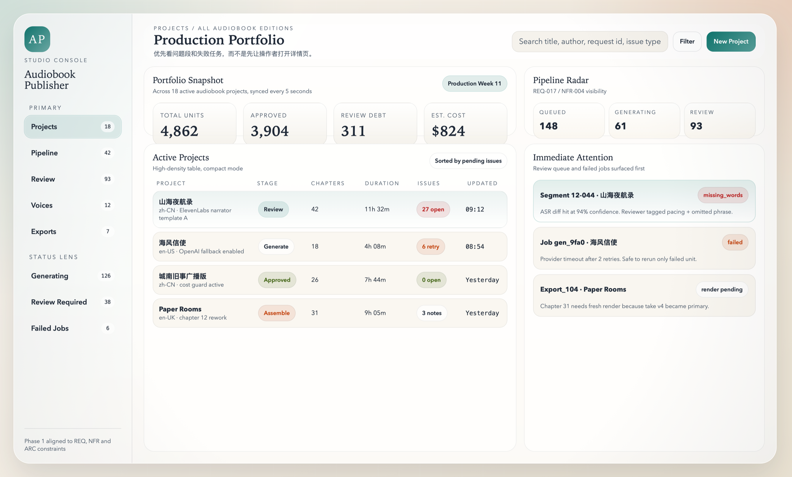
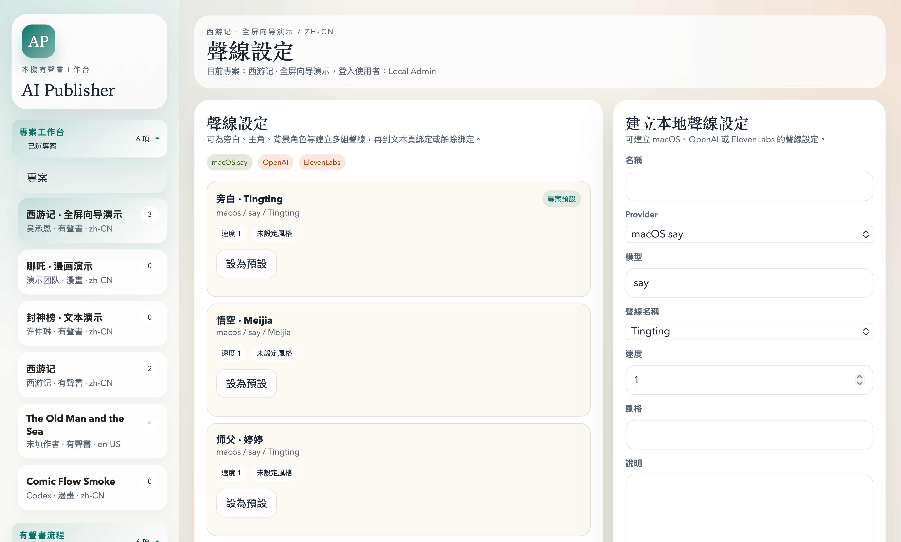
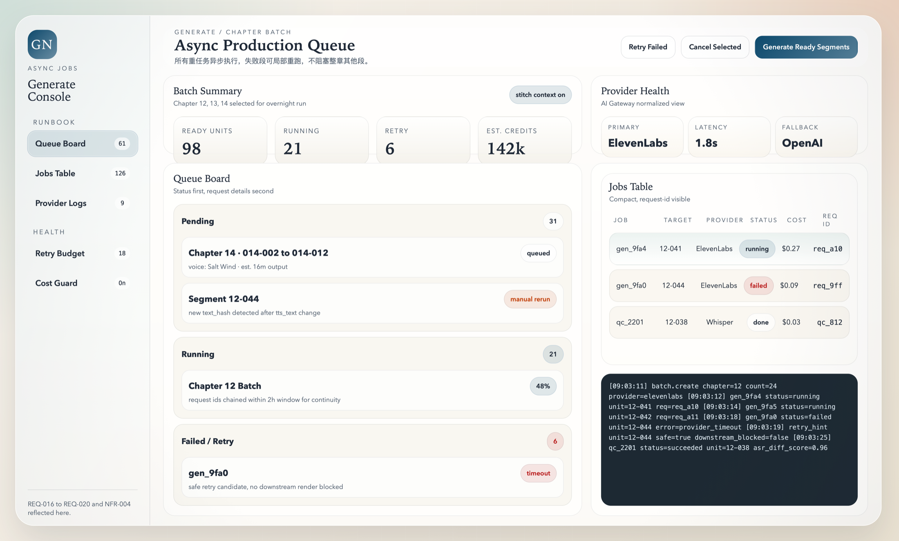
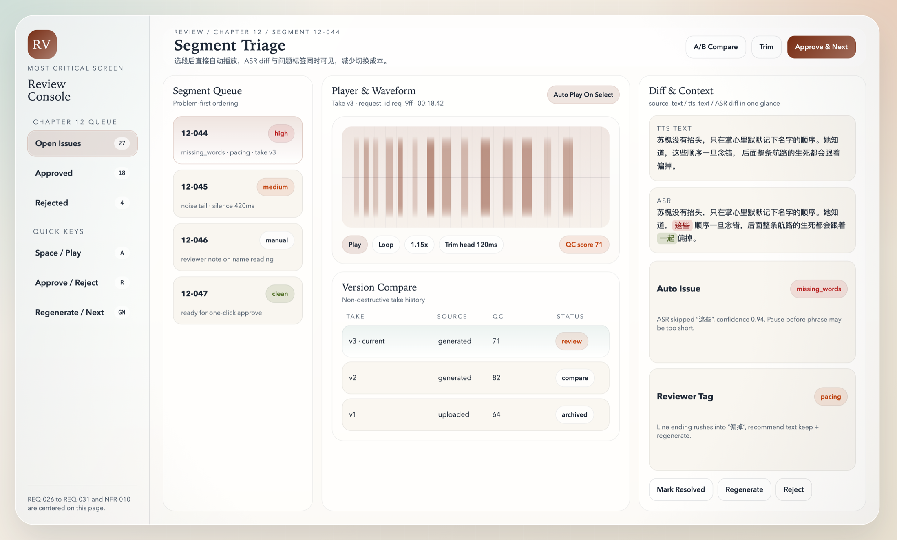
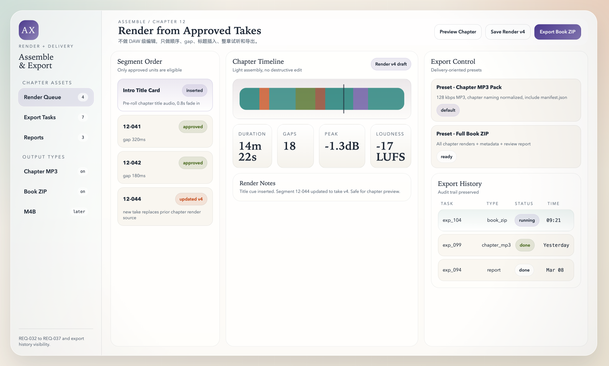

Audiobook 平台功能手册、模块划分与 AI 模型规划
本文档基于 audiobook_platform_req.md 与现有高保真页面稿，汇总形成一份面向评审、排期、研发与 PDF 归档的正式手册。它同时覆盖功能说明、模块划分、页面操作、功能清单、AI 模型策略以及阶段性边界。
文档版本：v1.1
适用对象：产品、设计、前端、后端、AI 网关、媒体处理、质检流程负责人
文档用途
用于统一以下几类决策：一期功能边界、页面结构、领域模块、AI 选型、技术拆分和开发任务清单。
包含内容
- 项目范围与目标
- 角色与流程
- 模块划分
- 功能手册
- 功能清单
- REQ 映射
- AI 模型矩阵
- 实施建议
引用源
PRD、架构文档、Schema/API 草案、Web 设计文档，以及基于这些资料生成的 6 张核心页面视觉稿。
目录
项目摘要与范围
不是“单脚本式 TTS 工具”，而是稳定的 audiobook 生产后台。
界面可使用 book / chapter / segment，底层模型保持可扩展。
导入、拆段、TTS、QC、审核、章节拼装、导出。
新增 edition type 与 unit type，而不是重做系统。
| 项 | 说明 |
|---|---|
| 文档目标 | 将 REQ、页面稿和技术方向收敛成一份可执行的正式手册，便于立项、评审、排期和 PDF 归档。 |
| 本期范围 | 项目列表与全屏电子书向导、文本导入、拆章拆段、编辑工作台、角色/声线绑定、异步 TTS、ASR/QC、人工审核、章节装配和交付导出。 |
| 明确不做 | 多人审批流、DAW 级编辑、多角色戏剧化演绎、完整 public publishing、m4b 完整出版封装。 |
| 成功标准 | 问题段可局部返工；所有音频与参数可追溯；失败任务可局部重试；系统底层可扩展到其他内容形态。 |
角色、职责与端到端流程
| 角色 | 核心职责 | 关键页面 | 主要输出 |
|---|---|---|---|
| Admin | 项目管理、用户权限、voice 模板、成本查看、导出结果管理。 | Projects、Voices、Exports、Settings | 项目配置、策略与交付授权 |
| Operator | 导入文本、拆章拆段、编辑 tts_text、发起生成、局部重生、章节装配。 | Projects、E-book Wizard、Text Prep、Voice Setup、Generate、Assemble | 可审阅的音频版本与章节 render |
| Reviewer | 试听、ASR diff 对照、问题标记、通过 / 退回、音频版本比对。 | Review | 审核状态、问题记录、通过的主版本 |
导入与拆段
可在项目列表打开全屏电子书向导，直接粘贴整本内容、手动新增自定义章节，或继续导入 txt / md / docx / epub，建立章节与 Segment 结构，同时保留 source_text 与整书 source_book.txt。
朗读稿准备
操作员清洗文本、删除不朗读内容、手工拆段或合段，并生成 tts_text。
声音与参数配置
为 book、chapter、segment 设置 narrator、provider、model、speed、style 和 pronunciation 规则。
异步生成与质检
批量 TTS -> 记录 request id -> 执行 ASR 与音频 QC -> 自动产生 review issue。
人工审核与局部返工
审核员在单页内试听、对比、标记问题、通过或退回，操作员对问题段局部重生。
章节装配与导出
从已通过 take 组装章节 render，设置 gap 或标题音频，然后导出 chapter mp3、book zip、整书 source_book.txt 与报告。
模块划分总览
模块划分分为两层：业务模块和运行模块。业务模块决定“系统做什么”，运行模块决定“系统如何部署和执行”。
3.1 平台分层图
| 业务模块 | 职责 | 关键对象 | 主要页面 |
|---|---|---|---|
| Project / Catalog | 管理作品、版本、项目、章节层级和全局摘要。 | Work、Edition、Chapter | Projects、Overview |
| Content Ingest | 导入文档、拆章、拆段、文本规范化与 source_text 保存。 | Chapter、Unit、source_text | Projects（E-book Wizard）、Text Prep |
| Script Preparation | 生成和维护 tts_text、停顿建议、不可朗读内容清理。 | tts_text、text_hash | Text Prep |
| Voice & Dictionary | 维护 voice profile、provider 参数、章节覆盖、发音规则。 | voice_profile、pronunciation_rule | Voice Setup |
| Workflow | 发起和管理生成、质检、渲染、导出等异步任务。 | Job、request_id、retry_count | Generate、Exports |
| Asset Management | 管理音频、波形、转录、章节 render 和导出包版本。 | Asset、AssetVersion、AudioTake | Review、Assemble |
| Quality Control | ASR 回听、diff、声学检查、QC 分数、自动问题生成。 | qc_result、review_issue | Review |
| Review & Release | 人工审核、主版本切换、章节装配、导出任务管理。 | review_issue、chapter_render、export_task | Review、Assemble & Export |
| 运行模块 | 职责 | 建议技术 |
|---|---|---|
| Studio Web | 桌面端生产后台、状态展示、批量操作、审核操作台。 | Next.js、TypeScript、TanStack Query、Zustand |
| Main API | 统一鉴权、业务接口、状态查询、内部任务触发。 | FastAPI |
| Worker Runtime | TTS、ASR、QC、波形、章节 render、导出。 | Celery 或 Arq + Redis |
| AI Gateway | 接入提供商、参数标准化、成本统计、fallback 路由。 | Provider adapter layer |
| Media Pipeline | 文件级处理，音频拼接、波形、loudness、trim、render。 | FFmpeg、Python tools |
| Storage & Queue | 结构化数据、任务协作、二进制资产存储。 | PostgreSQL、Redis、S3-compatible storage |
功能手册与页面操作
本节将 6 张核心页面稿转成可执行的操作手册。每个页面说明其目标、主要角色、关键动作、相关模块和对应 REQ 范围。
4.1 Projects Overview

| 项 | 说明 |
|---|---|
| 主要角色 | Admin、Operator |
| 相关模块 | Project / Catalog、Workflow、Cost Tracking、Review Summary |
| 相关 REQ | REQ-001 ~ REQ-004，NFR-001，NFR-011 |
4.2 Text Prep

| 项 | 说明 |
|---|---|
| 主要角色 | Operator |
| 相关模块 | Content Ingest、Script Preparation、Text Normalization |
| 相关 REQ | REQ-005 ~ REQ-010 |
4.3 Voice Setup

| 项 | 说明 |
|---|---|
| 主要角色 | Admin、Operator |
| 相关模块 | Voice & Dictionary、AI Gateway、Provider Registry |
| 相关 REQ | REQ-011 ~ REQ-015 |
4.4 Generate Console

| 项 | 说明 |
|---|---|
| 主要角色 | Operator、Admin |
| 相关模块 | Workflow、AI Gateway、Cost Tracking、Worker Runtime |
| 相关 REQ | REQ-016 ~ REQ-020，NFR-003，NFR-004，NFR-005 |
4.5 Review Console

| 项 | 说明 |
|---|---|
| 主要角色 | Reviewer、Operator |
| 相关模块 | Quality Control、Review、Asset Management |
| 相关 REQ | REQ-021 ~ REQ-031，NFR-010，NFR-011 |
4.6 Assemble & Export

| 项 | 说明 |
|---|---|
| 主要角色 | Operator、Admin |
| 相关模块 | Render / Export、Asset Management、Workflow |
| 相关 REQ | REQ-032 ~ REQ-040，NFR-006 ~ NFR-009 |
功能清单与 REQ 映射
下表将需求按功能域重组为交付清单。状态列当前默认是 Planned，用于后续排期和研发任务拆解。
| 功能域 | 功能项 | 优先级 | 状态 | 关联 REQ | 验收要点 |
|---|---|---|---|---|---|
| 项目管理 | 项目创建、列表、模板复制、归档 | P0 | Planned | REQ-001 ~ REQ-004 | 可创建 book / edition，支持全局摘要和筛选。 |
| 文本导入 | 全屏向导贴整本、手动新增章节、导入 txt / md / docx / epub，自动建章 | P0 | Planned | REQ-005、REQ-006 | 导入完成后能形成章节结构、支持自定义标题，并保留原文与整书 TXT。 |
| 文本准备 | 拆段、合段、顺序调整、tts_text 编辑 | P0 | Planned | REQ-007 ~ REQ-010 | source_text 与 tts_text 双向可追踪。 |
| 声音配置 | voice profile、章节覆盖、段级覆盖、发音规则 | P0 | Planned | REQ-011 ~ REQ-015 | 可设置 provider / model / voice / speed / style。 |
| 生成任务 | 单段生成、整章生成、失败重试、取消任务 | P0 | Planned | REQ-016 ~ REQ-020 | 所有任务异步，失败段局部可重跑。 |
| 版本管理 | 多 take、主版本切换、A/B 试听、trim | P0 | Planned | REQ-021 ~ REQ-025 | 任何修改不覆盖历史版本。 |
| 自动质检 | ASR、diff、声学检查、QC 分数 | P0 | Planned | REQ-026 ~ REQ-029 | 能标记缺词、多读、静音过长、响度异常。 |
| 人工审核 | 播放器、波形、问题标记、通过 / 退回 / 重生 | P0 | Planned | REQ-030、REQ-031 | 单页完成试听、标注、切换下一段。 |
| 章节装配 | 排序、gap、章节标题音频、render 历史 | P0 | Planned | REQ-032 ~ REQ-034 | 生成章节 render 新版本且可回溯。 |
| 导出 | chapter mp3、book zip、source_book.txt、manifest、报告 | P0 | Planned | REQ-035 ~ REQ-037 | 导出任务可查询状态与输出文件。 |
| 审计与追踪 | activity log、request id、审核人与时间 | P0 | Planned | REQ-038 ~ REQ-040 | 任一音频结果可追溯到文本和参数版本。 |
| 性能与可用性 | 1,000 Segment 筛选、2 秒波形、快捷键审核 | P0 | Planned | NFR-001 ~ NFR-012 | 桌面端生产流畅，问题段优先可见。 |
| 技术约束 | 统一模型、AI Gateway、异步 Worker、对象存储 | P0 | Planned | ARC-001 ~ ARC-012 | 底层不写死 segment-only 架构。 |
AI 模型清单与候选矩阵
AI 选型应按“能力域”抽象，而不是把业务逻辑写死到某个模型名。模型具体版本在实际接入时可能变化，因此平台必须通过 AI Gateway 以 provider adapter 的方式接入。
| 能力域 | Phase 1 主选 | 候选或扩展 | 用途 | 备注 |
|---|---|---|---|---|
| TTS 主生成 | ElevenLabs multilingual 系列 | OpenAI TTS 系列、其他 provider | 长文本 narrator 生成 | Phase 1 文档中最明确的主选方向；适合长文本和 stitching 场景。 |
| 表达型 TTS | ElevenLabs expressive 系列 | 其他高表现力 TTS | 对白更戏剧化的可选路线 | 适合作为 Phase 2 研究项，不作为一期默认主路线。 |
| Fallback TTS | OpenAI TTS 系列 | 其他 provider fallback | 降级兜底与多 provider 路由 | 通过 AI Gateway 屏蔽 provider 差异。 |
| ASR | OpenAI Whisper 系列或同级 ASR | 第三方 ASR 服务 | 回听、对齐、diff | 重点不是“逐字转写最准”，而是用于审核与质检的稳定性。 |
| 文本清洗 / 拆段建议 | 指令型 LLM（OpenAI GPT 系列或同级） | 更小模型 + 规则引擎 | 标点整理、不可朗读内容剔除、断句建议 | 建议以“建议模式”工作，不直接覆盖人工输入。 |
| 发音规则建议 | 指令型 LLM + 词典规则 | 命名实体识别模型 | 人名、地名、缩写、日期读法建议 | 最终规则应由平台持久化，不由模型直接持久化。 |
| QC 解释层 | 小型推理模型 + 规则引擎 | 只用规则、不接 LLM | 解释 diff 结果、归类问题类型、生成 reviewer hint | 高确定性问题尽量由规则引擎完成。 |
| Comic 图像生成 | Seedream 系列或图像生成模型家族 | OpenAI image family、其他 image model | 未来 comic edition 的 panel 图像生成 | 不属于 Phase 1 交付，但底层需要预留。 |
| Video 生成 | Veo family / Seedance family | 其他 shot / video generator | 未来 video edition 的 shot / clip 生成 | Phase 3 扩展方向。 |
| SBS / 深度相关 | Depth estimation family + stereo packaging tools | 后续 stereo scene models | 未来 SBS 内容的深度、左右目资产和设备适配 | 本期只在架构层预留，不做完整落地。 |
模型选择原则
- 先按能力域抽象，再决定 provider。
- 必须通过 AI Gateway 统一适配。
- 必须记录 request id、成本、时延和失败率。
- 可审计结果必须由平台数据库而不是模型自身持久化。
一期建议结论
- TTS 主路线以 ElevenLabs narrator 长文本能力为先。
- ASR 使用稳定转写服务，不把审校质量完全交给 ASR。
- 文本清洗和发音建议使用 LLM，但仅作为建议层。
- Future 模型保持“可插拔”，不把数据库设计绑定到某一个模型家族。
技术架构与运行组件
| 组件 | 核心职责 | 输入 | 输出 |
|---|---|---|---|
| Studio Web | 页面交互、状态展示、批量操作和审核工作流。 | API 数据、用户操作 | 任务请求、文本编辑、审核结果 |
| API Layer | 鉴权、对象读写、任务创建、统计摘要、状态查询。 | Web 请求、worker 回调 | 标准化接口、领域事件 |
| Domain Services | 围绕 work / edition / unit / asset 承载核心业务规则。 | 实体状态、业务命令 | 可持久化业务状态 |
| AI Gateway | 统一调用 TTS / ASR / LLM / image / video providers。 | 标准化生成请求 | 统一响应、错误码、成本记录 |
| Media Pipeline | 非 AI 文件处理：waveform、trim、拼接、render、loudness。 | 音频与资产文件 | 处理后的音频、波形、渲染版本 |
| Worker Runtime | 异步执行长任务，确保 HTTP 请求不阻塞。 | jobs、队列消息 | job status、产物、错误日志 |
阶段边界与实施建议
| 阶段 | 重点交付 | 不做 | 目标 |
|---|---|---|---|
| Phase 1 | Projects、E-book Wizard、Text Prep、Voice Setup、Generate、Review、Assemble、Export | 多角色戏剧化、复杂混音、完整 public publishing | 做出稳定 audiobook 生产链 |
| Phase 2 | 多角色、pronunciation 规则增强、成本看板、协作增强 | 完整 video / comic 生成平台 | 提升 audiobook 质量和团队效率 |
| Phase 3 | comic edition、video edition、更多 provider 路由 | 推翻既有主模型 | 验证统一出版平台的可扩展性 |
| Phase 4 | SBS edition、深度和双目资产、设备适配 | 为每个新形态重新做一套系统 | 平滑扩展到 stereo content |
先做什么
- 确定数据库主模型
- 完成导入和文本准备链路
- 搭建 AI Gateway 与 job queue
中期补强
- 审核页快捷键和工作流打磨
- QC 命中率和误报率调优
- 成本和 provider 成功率看板
必须避免
- 直接在业务代码里散落 provider 调用
- 同步执行长任务
- 覆盖式写音频结果
附录：模块与页面对应表
| 页面 | 服务模块 | 关键对象 | 产出 |
|---|---|---|---|
| Projects Overview | Project / Catalog、Workflow Summary | Work、Edition、aggregates | 项目摘要、风险热区 |
| Text Prep | Content Ingest、Script Preparation | Chapter、Unit、source_text、tts_text | 可生成的 ready segments、手动新增章节结果 |
| Voice Setup | Voice & Dictionary、AI Gateway | voice_profile、pronunciation_rule | 默认 narrator 配置与覆盖策略 |
| Generate Console | Workflow、Worker Runtime、Cost Tracking | Job、request_id、provider_call | 音频 take、日志、成本数据 |
| Review Console | Quality Control、Review、Asset Management | AudioTake、ASR、ReviewIssue | 通过的主版本与问题处理记录 |
| Assemble & Export | Render / Export、Asset Management | ChapterRender、ExportTask、manifest | chapter mp3、book zip、source_book.txt、报告 |